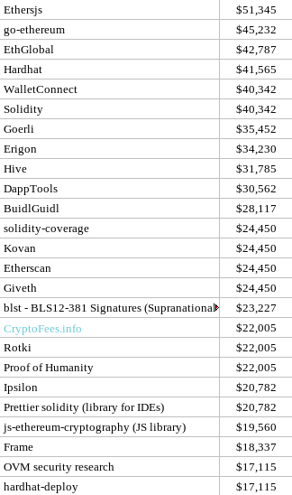
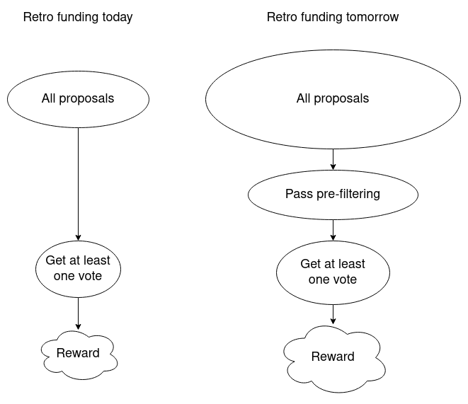
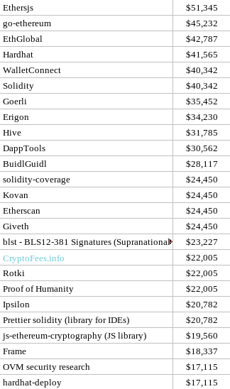
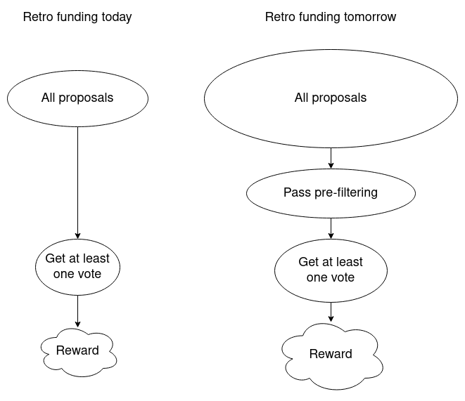

Review of Optimism retro funding round 1
2021 Nov 16
See all posts
Review of Optimism retro funding round 1
Special thanks to Karl Floersch and Haonan Li for feedback and review, and Jinglan Wang for discussion.
Last month, Optimism ran their first round of retroactive public goods funding, allocating a total of $1 million to 58 projects to reward the good work that these projects have already done for the Optimism and Ethereum ecosystems. In addition to being the first major retroactive general-purpose public goods funding experiment, it's also the first experiment in a new kind of governance through badge holders - not a very small decision-making board and also not a fully public vote, but instead a quadratic vote among a medium-sized group of 22 participants.
The entire process was highly transparent from start to finish:
And finally, here are the results in an easy-to-read chart form:

Much like the Gitcoin quadratic funding rounds and the MolochDAO grants, this is yet another instance of the Ethereum ecosystem establishing itself as a key player in the innovative public goods funding mechanism design space. But what can we learn from this experiment?
Analyzing the results
First, let us see if there are any interesting takeaways that can be seen by looking at the results. But what do we compare the results to? The most natural point of comparison is the other major public goods funding experiment that we've had so far: the Gitcoin quadratic funding rounds (in this case, round 11).
Gitcoin round 11 (tech only)
|
Optimism retro round 1
|
|

|
|
Probably the most obvious property of the Optimism retro results that can be seen without any comparisons is the category of the winners: every major Optimism retro winner was a technology project. There was nothing in the badge holder instructions that specified this; non-tech projects (say, the translations at ethereum.cn) were absolutely eligible. And yet, due to some combination of choice of badge holders and subconscious biases, the round seems to have been understood as being tech-oriented. Hence, I restricted the Gitcoin results in the table above to technology ("DApp Tech" + "Infra Tech") to focus on the remaining differences.
Some other key remaining differences are:
- The retro round was low variance: the top-receiving project only got three times more (in fact, exactly three times more) than the 25th, whereas in the Gitcoin chart combining the two categories the gap was over 5x, and if you look at DApp Tech or Infra Tech separately the gap is over 15x! I personally blame this on Gitcoin using standard quadratic funding (\(reward \approx (\sum_i \sqrt x_i) ^2\)) and the retro round using \(\sum_i \sqrt x_i\) without the square; perhaps the next retro round should just add the square.
- The retro round winners are more well-known projects: this is actually an intended consequence: the retro round focused on rewarding projects for value already provided, whereas the Gitcoin round was open-ended and many contributions were to promising new projects in expectation of future value.
- The retro round focused more on infrastructure, the Gitcoin round more on more user-facing projects: this is of course a generalization, as there are plenty of infrastructure projects in the Gitcoin list, but in general applications that are directly user-facing are much more prominent there. A particularly interesting consequence (or cause?) of this is that the Gitcoin round more on projects appealing to sub-communities (eg. gamers), whereas the retro round focused more on globally-valuable projects - or, less charitably, projects appealing to the one particular sub-community that is Ethereum developers.
It is my own (admittedly highly subjective) opinion that the retro round winner selection is somewhat higher quality. This is independent of the above three differences; it's more a general impression that the specific projects that were chosen as top recipients on the right were very high quality projects, to a greater extent than top recipients on the left.
Of course, this could have two causes: (i) a smaller but more skilled number of badge holders ("technocrats") can make better decisions than "the crowd", and (ii) it's easier to judge quality retroactively than ahead of time. And this gets us an interesting question: what if a simple way to summarize much of the above findings is that technocrats are smarter but the crowd is more diverse?
Could we make badge holders and their outputs more diverse?
To better understand the problem, let us zoom in on the one specific example that I already mentioned above: ethereum.cn. This is an excellent Chinese Ethereum community project (though not the only one! See also EthPlanet), which has been providing a lot of resources in Chinese for people to learn about Ethereum, including translations of many highly technical articles written by Ethereum community members and about Ethereum originally in English.
Ethereum.cn webpage. Plenty of high quality technical material - though they have still not yet gotten the memo that they were supposed to rename "eth2" to "consensus layer". Minus ten retroactive reward points for them.
What knowledge does a badge holder need to be able to effectively determine whether ethereum.cn is an awesome project, a well-meaning but mediocre project that few Chinese people actually visit, or a scam? Likely the following:
- Ability to speak and understand Chinese
- Being plugged into the Chinese community and understanding the social dynamics of that specific project
- Enough understanding of both the tech and of the frame of mind of non-technical readers to judge the site's usefulness for them
Out of the current, heavily US-focused, badge holders, the number that satisfy these requirements is basically zero. Even the two Chinese-speaking badge holders are US-based and not close to the Chinese Ethereum community.
So, what happens if we expand the badge holder set? We could add five badge holders from the Chinese Ethereum community, five from India, five from Latin America, five from Africa, and five from Antarctica to represent the penguins. At the same time we could also diversify among areas of expertise: some technical experts, some community leaders, some people plugged into the Ethereum gaming world. Hopefully, we can get enough coverage that for each project that's valuable to Ethereum, we would have at least 1-5 badge holders who understands enough about that project to be able to intelligently vote on it. But then we see the problem: there would only be 1-5 badge holders able to intelligently vote on it.
There are a few families of solutions that I see:
- Tweak the quadratic voting design. In theory, quadratic voting has the unique property that there's very little incentive to vote on projects that you do not understand. Any vote you make takes away credits that you could use to vote on projects you understand better. However, the current quadratic voting design has a flaw here: not voting on a project isn't truly a neutral non-vote, it's a vote for the project getting nothing. I don't yet have great ideas for how to do this. A key question is: if zero becomes a truly neutral vote, then how much money does a project get if nobody makes any votes on it? However, this is worth looking into more.
- Split up the voting into categories or sub-committees. Badge holders would first vote to sort projects into buckets, and the badge holders within each bucket ("zero knowledge proofs", "games", "India"...) would then make the decisions from there. This could also be done in a more "liquid" way through delegation - a badge holder could select some other badge holder to decide their vote on some project, and they would automatically copy their vote.
- Everyone still votes on everything, but facilitate more discussion. The badge holders that do have the needed domain expertise to assess a given project (or a single aspect of some given project) come up with their opinions and write a document or spreadsheet entry to express their reasoning. Other badge holders use this information to help make up their minds.
Once the number of decisions to be made gets even higher, we could even consider ideas like in-protocol random sortition (eg. see this idea to incorporate sortition into quadratic voting) to reduce the number of decisions that each participant needs to make. Quadratic sortition has the particularly nice benefit that it naturally leads to large decisions being made by the entire group and small decisions being made by smaller groups.
The means-testing debate
In the post-round retrospective discussion among the badgeholders, one of the key questions that was brought up is: when choosing which projects to fund, should badge holders take into account whether that project is still in dire need of funding, and de-prioritize projects that are already well-funded through some other means? That is to say, should retroactive rewards be means-tested?
In a "regular" grants-funding round, the rationale for answering "yes" is clear: increasing a project's funding from $0 to $100k has a much bigger impact on its ability to do its job than increasing a project's funding from $10m to $10.1m. But Optimism retro funding round 1 is not a regular grants-funding round. In retro funding, the objective is not to give people money in expectation of future work that money could help them do. Rather, the objective is to reward people for work already done, to change the incentives for anyone working on projects in the future. With this in mind, to what extent should retroactive project funding depend on how much a given project actually needs the funds?
The case for means testing
Suppose that you are a 20-year-old developer, and you are deciding whether to join some well-funded defi project with a fancy token, or to work on some cool open-source fully public good work that will benefit everyone. If you join the well-funded defi project, you will get a $100k salary, and your financial situation will be guaranteed to be very secure. If you work on public-good projects on your own, you will have no income. You have some savings and you could make some money with side gigs, but it will be difficult, and you're not sure if the sacrifice is worth it.
Now, consider two worlds, World A and World B. First, the similarities:
- There are ten people exactly like you out there that could get retro rewards, and five of you will. Hence, there's a 50% chance you'll get a retro reward.
- Theres's a 30% chance that your work will propel you to moderate fame and you'll be hired by some company with even better terms than the original defi project (or even start your own).
Now, the differences:
- World A (means testing): retro rewards are concentrated among the actors that do not find success some other way
- World B (no means testing): retro rewards are given out independently of whether or not the project finds success in some other way
Let's look at your chances in each world.
| Independent success and retroactive reward |
0% |
15% |
| Independent success only |
30% |
15% |
| Retroactive reward only |
50% |
35% |
| Nothing |
20% |
35% |
From your point of view as a non-risk-neutral human being, the 15% chance of getting success twice in world B matters much less than the fact that in world B your chances of being left completely in the cold with nothing are nearly double.
Hence, if we want to encourage people in this hypothetical 20 year old's position to actually contribute, concentrating retro rewards among projects who did not already get rewarded some other way seems prudent.
The case against means testing
Suppose that you are someone who contributes a small amount to many projects, or an investor seed-funding public good projects in anticipation of retroactive rewards. In this case, the share that you would get from any single retroactive reward is small. Would you rather have a 10% chance of getting $10,100, or a 10% chance of getting $10,000 and a 10% chance of getting $100? It really doesn't matter.
Furthermore, your chance of getting rewarded via retroactive funding may well be quite disjoint from your chance of getting rewarded some other way. There are countless stories on the internet of people putting a big part of their lives into a project when that project was non-profit and open-source, seeing that project go for-profit and become successful, and getting absolutely nothing out of it for themselves. In all of these cases, it doesn't really matter whether or not retroactive rewards care on whether or not projects are needy. In fact, it would probably be better for them to just focus on judging quality.
Means testing has downsides of its own. It would require badge holders to expend effort to determine to what extent a project is well-funded outside the retroactive reward system. It could lead to projects expending effort to hide their wealth and appear scrappy to increase their chance of getting more rewards. Subjective evaluations of neediness of recipients could turn into politicized evaluations of moral worthiness of recipients that introduce more controversy into the mechanism. In the extreme, an elaborate tax return system might be required to properly enforce fairness.
What do I think?
In general, it seems like doing a little bit of prioritizing projects that have not discovered business models has advantages, but we should not do too much of that. Projects should be judged by their effect on the world first and foremost.
Nominations
In this round, anyone could nominate projects by submitting them in a Google form, and there were only 106 projects nominated. What about the next round, now that people know for sure that they stand a chance at getting thousands of dollars in payout? What about the round a year in the hypothetical future, when fees from millions of daily transactions are paying into the retro funding rounds, and individual projects are getting more money than the entire round is today?
Some kind of multi-level structure for nominations seems inevitable. There's probably no need to enshrine it directly into the voting rules. Instead, we can look at this as one particular way of changing the structure of the discussion: nomination rules filter out the nominations that badge holders need to look at, and anything the badge holders do not look at will get zero votes by default (unless a badge holder really cares to bypass the rules because they have their own reasons to believe that some project is valuable).

Some possible ideas:
- Badge holder pre-approval: for a proposal to become visible, it must be approved by N badge holders (eg. N=3?). Any N badge holders could pre-approve any project; this is an anti-spam speed bump, not a gate-keeping sub-committee.
- Require proposers to provide more information about their proposal, justifying it and reducing the work badge holders need to do to go through it. Badge holders would also appoint a separate committee and entrust it with sorting through these proposals and forwarding the ones that follow the rules and pass a basic smell test of not being spam
- Proposals have to specify a category (eg. "zero knowledge proofs", "games", "India"), and badge holders who had declared themselves experts in that category would review those proposals and forward them to a vote only if they chose the right category and pass a basic smell test.
- Proposing requires a deposit of 0.02 ETH. If your proposal gets 0 votes (alternatively: if your proposal is explicitly deemed to be "spam"), your deposit is lost.
- Proposing requires a proof-of-humanity ID, with a maximum of 3 proposals per human. If your proposals get 0 votes (alternatively: if any of your proposals is explicitly deemed to be "spam"), you can no longer submit proposals for a year (or you have to provide a deposit).
Conflict of interest rules
The first part of the post-round retrospective discussion was taken up by discussion of conflict of interest rules. The badge holder instructions include the following lovely clause:
- No self-dealing or conflicts of interest
RetroDAO governance participants should refrain from voting on sending funds to organizations where any portion of those funds is expected to flow to them, their other projects, or anyone they have a close personal or economic relationship with.
As far as I can tell, this was honored. Badge holders did not try to self-deal, as they were (as far as I can tell) good people, and they knew their reputations were on the line. But there were also some subjective edge cases:
- Wording issues causing confusion. Some badge holders wondered about the word "other": could badge holders direct funds to their own primary projects? Additionally, the "sending funds to organizations where..." language does not strictly prohibit direct transfers to self. These were arguably simple mistakes in writing this clause; the word "other" should just be removed and "organizations" replaced with "addresses".
- What if a badge holder is part of a nonprofit that itself gives out grants to other projects? Could the badge holder vote for that nonprofit? The badge holder would not benefit, as the funds would 100% pass-through to others, but they could benefit indirectly.
- What level of connection counts as close connection? Ethereum is a tight-knit community and the people qualified to judge the best projects are often at least to some degree friends with the team or personally involved in those projects precisely because they respect those projects. When do those connections step over the line?
I don't think there are perfect answers to this; rather, the line will inevitably be gray and can only be discussed and refined over time. The main mechanism-design tweaks that can mitigate it are (i) increasing the number of badge holders, diluting the portion of them that can be insiders in any single project, (ii) reducing the rewards going to projects that only a few badge holders support (my suggestion above to set the reward to \((\sum_i \sqrt x_i)^2\) instead of \(\sum_i \sqrt x_i\) would help here too), and (iii) making sure it's possible for badge holders to counteract clear abuses if they do show up.
Should badge holder votes be secret ballot?
In this round, badge holder votes were completely transparent; anyone can see how each badge holder votes. But transparent voting has a huge downside: it's vulnerable to bribery, including informal bribery of the kind that even good people easily succumb to. Badge holders could end up supporting projects in part with the subconscious motivation of winning favor with them. Even more realistically, badge holders may be unwilling to make negative votes even when they are justified, because a public negative vote could easily rupture a relationship.
Secret ballots are the natural alternative. Secret ballots are used widely in democratic elections where any citizen (or sometimes resident) can vote, precisely to prevent vote buying and more coercive forms of influencing how people vote. However, in typical elections, votes within executive and legislative bodies are typically public. The usual reasons for this have to do with theories of democratic accountability: voters need to know how their representatives vote so that they can choose their representatives and know that they are not completely lying about their stated values. But there's also a dark side to accountability: elected officials making public votes are accountable to anyone who is trying to bribe them.
Secret ballots within government bodies do have precedent:
In general, the conclusion seems to be that secret votes in government bodies have complicated consequences; it's not clear that they should be used everywhere, but it's also not clear that transparency is an absolute good either.
In the context of Optimism retro funding specifically, the main specific argument I heard against secret voting is that it would make it harder for badge holders to rally and vote against other badge holders making votes that are clearly very wrong or even malicious. Today, if a few rogue badge holders start supporting a project that has not provided value and is clearly a cash grab for those badge holders, the other badge holders can see this and make negative votes to counteract this attack. With secret ballots, it's not clear how this could be done.
I personally would favor the second round of Optimism retro funding using completely secret votes (except perhaps open to a few researchers under conditions of non-disclosure) so we can tell what the material differences are in the outcome. Given the current small and tight-knit set of badge holders, dealing with rogue badge hodlers is likely not a primary concern, but in the future it will be; hence, coming up with a secret ballot design that allows counter-voting or some alternative strategy is an important research problem.
Other ideas for structuring discussion
The level of participation among badge holders was very uneven. Some (particularly Jeff Coleman and Matt Garnett) put a lot of effort into their participation, publicly expressing their detailed reasoning in Twitter threads and helping to set up calls for more detailed discussion. Others participated in the discussion on Discord and still others just voted and did little else.
There was a choice made (ok fine, I was the one who suggested it) that the #retroactive-public-goods channel should be readable by all (it's in the Optimism discord), but to prevent spam only badge holders should be able to speak. This reduced many people's ability to participate, especially ironically enough my own (I am not a badge holder, and my self-imposed Twitter quarantine, which only allows me to tweet links to my own long-form content, prevented me from engaging on Twitter).
These two factors together meant that there was not that much discussion taking place; certainly less than I had been hoping for. What are some ways to encourage more discussion?
Some ideas:
- Badge holders could vote in advisors, who cannot vote but can speak in the #retroactive-public-goods channel and other badge-holder-only meetings.
- Badge holders could be required to explain their decisions, eg. writing a post or a paragraph for each project they made votes on.
- Consider compensating badge holders, either through an explicit fixed fee or through a norm that badge holders themselves who made exceptional contributions to discussion are eligible for rewards in future rounds.
- Add more discussion formats. If the number of badge holders increases and there are subgroups with different specialties, there could be more chat rooms and each of them could invite outsiders. Another option is to create a dedicated subreddit.
It's probably a good idea to start experimenting with more ideas like this.
Conclusions
Generally, I think Round 1 of Optimism retro funding has been a success. Many interesting and valuable projects were funded, there was quite a bit of discussion, and all of this despite it only being the first round.
There are a number of ideas that could be introduced or experimented with in subsequent rounds:
- Increase the number and diversity of badge holders, while making sure that there is some solution to the problem that only a few badge holders will be experts in any individual project's domain.
- Add some kind of two-layer nomination structure, to lower the decision-making burden that the entire badge holder set is exposed to
- Use secret ballots
- Add more discussion channels, and more ways for non-badge-holders to participate. This could involve reforming how existing channels work, or it could involve adding new channels, or even specialized channels for specific categories of projects.
- Change the reward formula to increase variance, from the current \(\sum_i \sqrt x_i\) to the standard quadratic funding formula of \((\sum_i \sqrt x_i) ^2\).
In the long term, if we want retro funding to be a sustainable institution, there is also the question of how new badge holders are to be chosen (and, in cases of malfeasance, how badge holders could be removed). Currently, the selection is centralized. In the future, we need some alternative. One possible idea for round 2 is to simply allow existing badge holders to vote in a few new badge holders. In the longer term, to prevent it from being an insular bureaucracy, perhaps one badge holder each round could be chosen by something with more open participation, like a proof-of-humanity vote?
In any case, retroactive public goods funding is still an exciting and new experiment in institutional innovation in multiple ways. It's an experiment in non-coin-driven decentralized governance, and it's an experiment in making things happen through retroactive, rather than proactive, incentives. To make the experiment fully work, a lot more innovation will need to happen both in the mechanism itself and in the ecosystem that needs to form around it. When will we see the first retro funding-focused angel investor? Whatever ends up happening, I'm looking forward to seeing how this experiment evolves in the rounds to come.
Review of Optimism retro funding round 1
2021 Nov 16 See all postsSpecial thanks to Karl Floersch and Haonan Li for feedback and review, and Jinglan Wang for discussion.
Last month, Optimism ran their first round of retroactive public goods funding, allocating a total of $1 million to 58 projects to reward the good work that these projects have already done for the Optimism and Ethereum ecosystems. In addition to being the first major retroactive general-purpose public goods funding experiment, it's also the first experiment in a new kind of governance through badge holders - not a very small decision-making board and also not a fully public vote, but instead a quadratic vote among a medium-sized group of 22 participants.
The entire process was highly transparent from start to finish:
And finally, here are the results in an easy-to-read chart form:

Much like the Gitcoin quadratic funding rounds and the MolochDAO grants, this is yet another instance of the Ethereum ecosystem establishing itself as a key player in the innovative public goods funding mechanism design space. But what can we learn from this experiment?
Analyzing the results
First, let us see if there are any interesting takeaways that can be seen by looking at the results. But what do we compare the results to? The most natural point of comparison is the other major public goods funding experiment that we've had so far: the Gitcoin quadratic funding rounds (in this case, round 11).
Gitcoin round 11 (tech only)
Optimism retro round 1
Probably the most obvious property of the Optimism retro results that can be seen without any comparisons is the category of the winners: every major Optimism retro winner was a technology project. There was nothing in the badge holder instructions that specified this; non-tech projects (say, the translations at ethereum.cn) were absolutely eligible. And yet, due to some combination of choice of badge holders and subconscious biases, the round seems to have been understood as being tech-oriented. Hence, I restricted the Gitcoin results in the table above to technology ("DApp Tech" + "Infra Tech") to focus on the remaining differences.
Some other key remaining differences are:
It is my own (admittedly highly subjective) opinion that the retro round winner selection is somewhat higher quality. This is independent of the above three differences; it's more a general impression that the specific projects that were chosen as top recipients on the right were very high quality projects, to a greater extent than top recipients on the left.
Of course, this could have two causes: (i) a smaller but more skilled number of badge holders ("technocrats") can make better decisions than "the crowd", and (ii) it's easier to judge quality retroactively than ahead of time. And this gets us an interesting question: what if a simple way to summarize much of the above findings is that technocrats are smarter but the crowd is more diverse?
Could we make badge holders and their outputs more diverse?
To better understand the problem, let us zoom in on the one specific example that I already mentioned above: ethereum.cn. This is an excellent Chinese Ethereum community project (though not the only one! See also EthPlanet), which has been providing a lot of resources in Chinese for people to learn about Ethereum, including translations of many highly technical articles written by Ethereum community members and about Ethereum originally in English.
Ethereum.cn webpage. Plenty of high quality technical material - though they have still not yet gotten the memo that they were supposed to rename "eth2" to "consensus layer". Minus ten retroactive reward points for them.
What knowledge does a badge holder need to be able to effectively determine whether ethereum.cn is an awesome project, a well-meaning but mediocre project that few Chinese people actually visit, or a scam? Likely the following:
Out of the current, heavily US-focused, badge holders, the number that satisfy these requirements is basically zero. Even the two Chinese-speaking badge holders are US-based and not close to the Chinese Ethereum community.
So, what happens if we expand the badge holder set? We could add five badge holders from the Chinese Ethereum community, five from India, five from Latin America, five from Africa, and five from Antarctica to represent the penguins. At the same time we could also diversify among areas of expertise: some technical experts, some community leaders, some people plugged into the Ethereum gaming world. Hopefully, we can get enough coverage that for each project that's valuable to Ethereum, we would have at least 1-5 badge holders who understands enough about that project to be able to intelligently vote on it. But then we see the problem: there would only be 1-5 badge holders able to intelligently vote on it.
There are a few families of solutions that I see:
Once the number of decisions to be made gets even higher, we could even consider ideas like in-protocol random sortition (eg. see this idea to incorporate sortition into quadratic voting) to reduce the number of decisions that each participant needs to make. Quadratic sortition has the particularly nice benefit that it naturally leads to large decisions being made by the entire group and small decisions being made by smaller groups.
The means-testing debate
In the post-round retrospective discussion among the badgeholders, one of the key questions that was brought up is: when choosing which projects to fund, should badge holders take into account whether that project is still in dire need of funding, and de-prioritize projects that are already well-funded through some other means? That is to say, should retroactive rewards be means-tested?
In a "regular" grants-funding round, the rationale for answering "yes" is clear: increasing a project's funding from $0 to $100k has a much bigger impact on its ability to do its job than increasing a project's funding from $10m to $10.1m. But Optimism retro funding round 1 is not a regular grants-funding round. In retro funding, the objective is not to give people money in expectation of future work that money could help them do. Rather, the objective is to reward people for work already done, to change the incentives for anyone working on projects in the future. With this in mind, to what extent should retroactive project funding depend on how much a given project actually needs the funds?
The case for means testing
Suppose that you are a 20-year-old developer, and you are deciding whether to join some well-funded defi project with a fancy token, or to work on some cool open-source fully public good work that will benefit everyone. If you join the well-funded defi project, you will get a $100k salary, and your financial situation will be guaranteed to be very secure. If you work on public-good projects on your own, you will have no income. You have some savings and you could make some money with side gigs, but it will be difficult, and you're not sure if the sacrifice is worth it.
Now, consider two worlds, World A and World B. First, the similarities:
Now, the differences:
Let's look at your chances in each world.
From your point of view as a non-risk-neutral human being, the 15% chance of getting success twice in world B matters much less than the fact that in world B your chances of being left completely in the cold with nothing are nearly double.
Hence, if we want to encourage people in this hypothetical 20 year old's position to actually contribute, concentrating retro rewards among projects who did not already get rewarded some other way seems prudent.
The case against means testing
Suppose that you are someone who contributes a small amount to many projects, or an investor seed-funding public good projects in anticipation of retroactive rewards. In this case, the share that you would get from any single retroactive reward is small. Would you rather have a 10% chance of getting $10,100, or a 10% chance of getting $10,000 and a 10% chance of getting $100? It really doesn't matter.
Furthermore, your chance of getting rewarded via retroactive funding may well be quite disjoint from your chance of getting rewarded some other way. There are countless stories on the internet of people putting a big part of their lives into a project when that project was non-profit and open-source, seeing that project go for-profit and become successful, and getting absolutely nothing out of it for themselves. In all of these cases, it doesn't really matter whether or not retroactive rewards care on whether or not projects are needy. In fact, it would probably be better for them to just focus on judging quality.
Means testing has downsides of its own. It would require badge holders to expend effort to determine to what extent a project is well-funded outside the retroactive reward system. It could lead to projects expending effort to hide their wealth and appear scrappy to increase their chance of getting more rewards. Subjective evaluations of neediness of recipients could turn into politicized evaluations of moral worthiness of recipients that introduce more controversy into the mechanism. In the extreme, an elaborate tax return system might be required to properly enforce fairness.
What do I think?
In general, it seems like doing a little bit of prioritizing projects that have not discovered business models has advantages, but we should not do too much of that. Projects should be judged by their effect on the world first and foremost.
Nominations
In this round, anyone could nominate projects by submitting them in a Google form, and there were only 106 projects nominated. What about the next round, now that people know for sure that they stand a chance at getting thousands of dollars in payout? What about the round a year in the hypothetical future, when fees from millions of daily transactions are paying into the retro funding rounds, and individual projects are getting more money than the entire round is today?
Some kind of multi-level structure for nominations seems inevitable. There's probably no need to enshrine it directly into the voting rules. Instead, we can look at this as one particular way of changing the structure of the discussion: nomination rules filter out the nominations that badge holders need to look at, and anything the badge holders do not look at will get zero votes by default (unless a badge holder really cares to bypass the rules because they have their own reasons to believe that some project is valuable).

Some possible ideas:
Conflict of interest rules
The first part of the post-round retrospective discussion was taken up by discussion of conflict of interest rules. The badge holder instructions include the following lovely clause:
As far as I can tell, this was honored. Badge holders did not try to self-deal, as they were (as far as I can tell) good people, and they knew their reputations were on the line. But there were also some subjective edge cases:
I don't think there are perfect answers to this; rather, the line will inevitably be gray and can only be discussed and refined over time. The main mechanism-design tweaks that can mitigate it are (i) increasing the number of badge holders, diluting the portion of them that can be insiders in any single project, (ii) reducing the rewards going to projects that only a few badge holders support (my suggestion above to set the reward to \((\sum_i \sqrt x_i)^2\) instead of \(\sum_i \sqrt x_i\) would help here too), and (iii) making sure it's possible for badge holders to counteract clear abuses if they do show up.
Should badge holder votes be secret ballot?
In this round, badge holder votes were completely transparent; anyone can see how each badge holder votes. But transparent voting has a huge downside: it's vulnerable to bribery, including informal bribery of the kind that even good people easily succumb to. Badge holders could end up supporting projects in part with the subconscious motivation of winning favor with them. Even more realistically, badge holders may be unwilling to make negative votes even when they are justified, because a public negative vote could easily rupture a relationship.
Secret ballots are the natural alternative. Secret ballots are used widely in democratic elections where any citizen (or sometimes resident) can vote, precisely to prevent vote buying and more coercive forms of influencing how people vote. However, in typical elections, votes within executive and legislative bodies are typically public. The usual reasons for this have to do with theories of democratic accountability: voters need to know how their representatives vote so that they can choose their representatives and know that they are not completely lying about their stated values. But there's also a dark side to accountability: elected officials making public votes are accountable to anyone who is trying to bribe them.
Secret ballots within government bodies do have precedent:
In general, the conclusion seems to be that secret votes in government bodies have complicated consequences; it's not clear that they should be used everywhere, but it's also not clear that transparency is an absolute good either.
In the context of Optimism retro funding specifically, the main specific argument I heard against secret voting is that it would make it harder for badge holders to rally and vote against other badge holders making votes that are clearly very wrong or even malicious. Today, if a few rogue badge holders start supporting a project that has not provided value and is clearly a cash grab for those badge holders, the other badge holders can see this and make negative votes to counteract this attack. With secret ballots, it's not clear how this could be done.
I personally would favor the second round of Optimism retro funding using completely secret votes (except perhaps open to a few researchers under conditions of non-disclosure) so we can tell what the material differences are in the outcome. Given the current small and tight-knit set of badge holders, dealing with rogue badge hodlers is likely not a primary concern, but in the future it will be; hence, coming up with a secret ballot design that allows counter-voting or some alternative strategy is an important research problem.
Other ideas for structuring discussion
The level of participation among badge holders was very uneven. Some (particularly Jeff Coleman and Matt Garnett) put a lot of effort into their participation, publicly expressing their detailed reasoning in Twitter threads and helping to set up calls for more detailed discussion. Others participated in the discussion on Discord and still others just voted and did little else.
There was a choice made (ok fine, I was the one who suggested it) that the #retroactive-public-goods channel should be readable by all (it's in the Optimism discord), but to prevent spam only badge holders should be able to speak. This reduced many people's ability to participate, especially ironically enough my own (I am not a badge holder, and my self-imposed Twitter quarantine, which only allows me to tweet links to my own long-form content, prevented me from engaging on Twitter).
These two factors together meant that there was not that much discussion taking place; certainly less than I had been hoping for. What are some ways to encourage more discussion?
Some ideas:
It's probably a good idea to start experimenting with more ideas like this.
Conclusions
Generally, I think Round 1 of Optimism retro funding has been a success. Many interesting and valuable projects were funded, there was quite a bit of discussion, and all of this despite it only being the first round.
There are a number of ideas that could be introduced or experimented with in subsequent rounds:
In the long term, if we want retro funding to be a sustainable institution, there is also the question of how new badge holders are to be chosen (and, in cases of malfeasance, how badge holders could be removed). Currently, the selection is centralized. In the future, we need some alternative. One possible idea for round 2 is to simply allow existing badge holders to vote in a few new badge holders. In the longer term, to prevent it from being an insular bureaucracy, perhaps one badge holder each round could be chosen by something with more open participation, like a proof-of-humanity vote?
In any case, retroactive public goods funding is still an exciting and new experiment in institutional innovation in multiple ways. It's an experiment in non-coin-driven decentralized governance, and it's an experiment in making things happen through retroactive, rather than proactive, incentives. To make the experiment fully work, a lot more innovation will need to happen both in the mechanism itself and in the ecosystem that needs to form around it. When will we see the first retro funding-focused angel investor? Whatever ends up happening, I'm looking forward to seeing how this experiment evolves in the rounds to come.